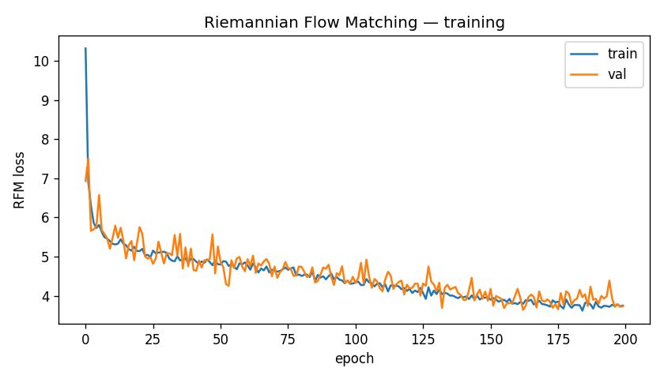
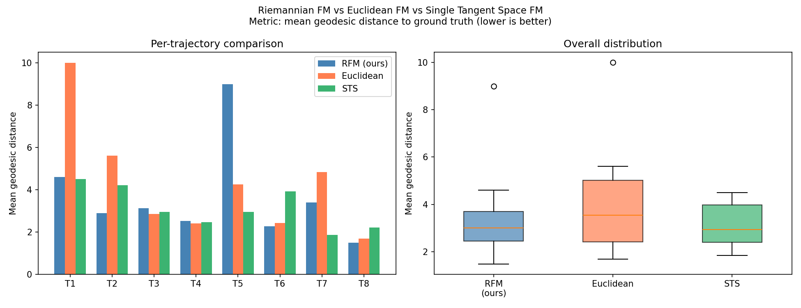
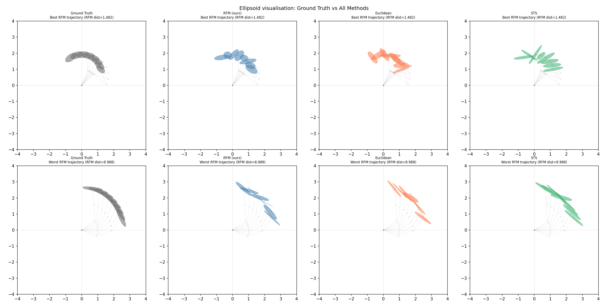

This is a story about a robot arm, a curved space, and a null result that I think is actually the interesting part. I applied Riemannian Flow Matching to robot manipulability ellipsoids and ran it against two baselines. The geometric method didn't win. Here is the full picture of why, with all the math and all the machinery.
Start here: what does a robot arm want
Imagine a simple robot arm bolted to a table. It has three joints. At any moment, the joints are at some configuration, some set of angles, and the arm can move. But it cannot move equally well in all directions. Depending on the angles, it might be able to push left and right freely but barely move up and down. Or it might be stuck near a singularity, where all the joints are lined up and the arm can only move in one direction at all.
This directional dexterity is called manipulability. And it has a clean mathematical representation: an ellipsoid. Fat in the directions the arm can move easily. Thin in the directions it is constrained. Round means free. Elongated means nearly singular.
The ellipsoid at configuration $\mathbf{q}$ is the matrix $\mathbf{M} = \mathbf{J}\mathbf{J}^\top$, where $\mathbf{J}$ is the Jacobian of the end-effector position with respect to the joint angles. The Jacobian tells you how joint velocity maps to end-effector velocity. So $\mathbf{J}\mathbf{J}^\top$ is the set of all end-effector velocities you can produce with unit joint velocity, which is exactly the shape of the dexterity ellipse.
Now there is a practical question. Suppose a robot learns good manipulability profiles on one task: reaching left, say. Can you transfer that knowledge to a different task without relearning from scratch? Noémie Jaquier's lab published a framework for this in 2021. The key problem is that you need to generate new manipulability ellipsoids conditioned on a task description, which means you need a generative model over the space of these ellipsoidal matrices.
That space is not flat. That is where this gets interesting.
The space of ellipsoids is curved
The matrix $\mathbf{M} = \mathbf{J}\mathbf{J}^\top$ is always symmetric positive-definite (SPD). Symmetric means $\mathbf{M}^\top = \mathbf{M}$. Positive-definite means all eigenvalues are strictly positive, which is just saying the ellipsoid has a real shape and hasn't collapsed to a flat line or a point.
The set of all $n \times n$ SPD matrices, which we write $\mathcal{S}_{++}^n$, is a Riemannian manifold. That phrase is easy to say and hard to feel. The intuition is this: you cannot do arithmetic on SPD matrices the same way you do arithmetic on numbers. If you take two SPD matrices and average their entries, you can get a result that is not SPD. More insidiously, the straight line between two SPD matrices in flat vector space does not correspond to a meaningful path between two ellipsoids in the physical world.
The right notion of distance between two SPD matrices $\mathbf{S}$ and $\mathbf{T}$, under the affine-invariant metric, is:
$$d(\mathbf{S}, \mathbf{T}) = \left\| \log\!\left(\mathbf{S}^{-1/2} \mathbf{T} \mathbf{S}^{-1/2}\right) \right\|_F$$This is the length of the geodesic, the curved-space analog of a straight line, connecting the two matrices. The $\mathbf{S}^{-1/2}(\cdot)\mathbf{S}^{-1/2}$ transformation removes the curvature contribution from the basepoint $\mathbf{S}$, and the matrix logarithm maps the result back to a flat tangent space where we can take a Frobenius norm.
The tools for navigating this curved space are two maps. The exponential map takes a tangent vector $\mathbf{V}$ at a point $\mathbf{S}$ and shoots it out along the geodesic to land on the manifold:
$$\mathrm{Exp}_{\mathbf{S}}(\mathbf{V}) = \mathbf{S}^{1/2} \exp\!\left(\mathbf{S}^{-1/2} \mathbf{V} \mathbf{S}^{-1/2}\right) \mathbf{S}^{1/2}$$The logarithmic map is the inverse: given two points $\mathbf{S}$ and $\mathbf{T}$, it finds the tangent vector at $\mathbf{S}$ that points toward $\mathbf{T}$:
$$\mathrm{Log}_{\mathbf{S}}(\mathbf{T}) = \mathbf{S}^{1/2} \log\!\left(\mathbf{S}^{-1/2} \mathbf{T} \mathbf{S}^{-1/2}\right) \mathbf{S}^{1/2}$$Both the matrix exponential and matrix logarithm are computed via eigendecomposition. If $\mathbf{A} = \mathbf{U} \mathbf{\Lambda} \mathbf{U}^\top$, then $\exp(\mathbf{A}) = \mathbf{U} \exp(\mathbf{\Lambda}) \mathbf{U}^\top$ where the exponential of a diagonal matrix is just the elementwise exponential of the diagonal. All of this runs on CPU in the implementation because MPS (Apple's GPU backend) does not reliably support eigendecomposition for all matrix sizes.
What is flow matching
Flow matching is a generative modeling technique. The idea is simple: you have a source distribution (easy to sample, like a Gaussian) and a target distribution (your actual data). You want to learn a vector field that, when you follow it over time $t \in [0, 1]$, takes samples from the source and moves them to the target.
The key insight from Lipman et al. (2023) is that you do not need to train on the global vector field. You can condition on individual data points and train the network to predict the vector field that connects a specific source sample $\mathbf{x}_0$ to a specific target point $\mathbf{x}_1$. The loss is:
$$\mathcal{L} = \mathbb{E}_{t,\, \mathbf{x}_0,\, \mathbf{x}_1} \left\| v_\theta(\mathbf{x}_t, t) - u_t(\mathbf{x}_t \mid \mathbf{x}_1) \right\|^2$$where $\mathbf{x}_t = (1-t)\mathbf{x}_0 + t\mathbf{x}_1$ is the linear interpolation, and $u_t(\mathbf{x}_t \mid \mathbf{x}_1) = \mathbf{x}_1 - \mathbf{x}_0$ is the constant target velocity. The neural network $v_\theta$ learns to approximate this target field. At inference, you start from noise and integrate the ODE $\dot{\mathbf{x}} = v_\theta(\mathbf{x}, t)$ from $t=0$ to $t=1$ using Euler steps.
Riemannian flow matching
Chen and Lipman (2024) extended flow matching to Riemannian manifolds. The modification is exactly what you would expect: replace the straight-line interpolation with a geodesic, and replace the flat velocity with the Riemannian log map velocity.
Given a source sample $\mathbf{M}_0$ and a target $\mathbf{M}_1$ on the SPD manifold, the geodesic interpolation at time $t$ is:
$$\mathbf{M}_t = \mathrm{Exp}_{\mathbf{M}_0}\!\left(t \cdot \mathrm{Log}_{\mathbf{M}_0}(\mathbf{M}_1)\right)$$The target velocity at time $t$, pointing from $\mathbf{M}_t$ toward $\mathbf{M}_1$, is:
$$u_t(\mathbf{M}_t \mid \mathbf{M}_1) = \frac{\mathrm{Log}_{\mathbf{M}_t}(\mathbf{M}_1)}{1 - t}$$And the RFM training loss is:
$$\mathcal{L}_{\mathrm{RFM}} = \mathbb{E}\left\| v_\theta(\mathbf{M}_t, t, \mathbf{c}) - \frac{\mathrm{Log}_{\mathbf{M}_t}(\mathbf{M}_1)}{1-t} \right\|_F^2$$where $\mathbf{c}$ is the task conditioning. There is something important to notice about this target as $t \to 1$: $\mathbf{M}_t \to \mathbf{M}_1$, so $\mathrm{Log}_{\mathbf{M}_t}(\mathbf{M}_1) \to \mathbf{0}$, and it goes to zero faster than $(1-t)$ in the denominator. So the target velocity stays bounded throughout training. This fact will come up again.
The single tangent space fallacy
Before building RFM, I needed baselines to compare against. The natural ones are: (1) ignore the manifold entirely and run flow matching in flat Euclidean space, and (2) use the common shortcut of approximating the manifold with a single tangent space.
The single tangent space (STS) approach works like this. Pick a reference point $\mathbf{S}_0$ on the manifold. Map all your data to the tangent space at that point via $\mathrm{Log}_{\mathbf{S}_0}$. Do all your machine learning in that flat tangent space. At inference, map samples back via $\mathrm{Exp}_{\mathbf{S}_0}$. This is cheap and easy to implement because you only ever do Riemannian operations at one fixed point.
Jaquier et al. published a paper in 2024 called "Unraveling the Single Tangent Space Fallacy" showing exactly when this breaks down. A tangent space at $\mathbf{S}_0$ is a first-order approximation to the manifold, like touching a curved surface with a flat plane. If your data points are close to $\mathbf{S}_0$, the approximation is fine. If they are far away, the curvature of the manifold causes the flat approximation to systematically distort distances and distributions. The fallacy is assuming the tangent space is always good enough.
I wanted to test whether this fallacy actually shows up for manipulability data. That required building all three methods and running them on the same dataset.
The data
Everything runs on a MacBook. No GPU server, no simulator, no robot. I generated a synthetic dataset using a 3-joint planar robot arm with unit link lengths. The forward kinematics is just trigonometry. For a 3-joint arm with angles $\mathbf{q} = [q_1, q_2, q_3]$, the end-effector position is:
$$\mathbf{p}(\mathbf{q}) = \begin{bmatrix} \sum_{i=1}^{3} \cos\!\left(\sum_{j=1}^{i} q_j\right) \\ \sum_{i=1}^{3} \sin\!\left(\sum_{j=1}^{i} q_j\right) \end{bmatrix}$$The Jacobian $\mathbf{J}(\mathbf{q}) \in \mathbb{R}^{2 \times 3}$ is the derivative of this with respect to $\mathbf{q}$. The $k$-th column is:
$$\mathbf{J}_k = \begin{bmatrix} -\sum_{i=k}^{3} \sin\!\left(\sum_{j=1}^{i} q_j\right) \\ \phantom{-}\sum_{i=k}^{3} \cos\!\left(\sum_{j=1}^{i} q_j\right) \end{bmatrix}$$At each configuration I compute $\mathbf{M}(\mathbf{q}) = \mathbf{J}(\mathbf{q})\mathbf{J}(\mathbf{q})^\top \in \mathcal{S}_{++}^2$, a $2 \times 2$ SPD matrix. I generated 500 trajectories by sampling random start and end configurations in $[-\pi, \pi]^3$, interpolating 50 steps each in joint space. That gives 25,000 SPD matrices total. The task descriptor for each trajectory is $\mathbf{c} = [\mathbf{p}_\mathrm{start};\, \mathbf{p}_\mathrm{end}] \in \mathbb{R}^4$.
The models
RFM
The vector field network is a 4-layer MLP with hidden dimension 128, SiLU activations, and 51,075 parameters total. The input is the upper-triangle of $\mathbf{M}$ (3 values for a $2 \times 2$ matrix), the time $t \in [0,1]$, and the task descriptor $\mathbf{c}$. The output is a symmetric $2 \times 2$ matrix representing a tangent vector.
Training: Adam with learning rate $10^{-3}$ and cosine annealing, batch size 32, 200 epochs, 90/10 train/val split. Manifold operations on CPU, network forward/backward on MPS.
Euclidean FM
Flatten each SPD matrix to its upper-triangle vector $(M_{11}, M_{12}, M_{22}) \in \mathbb{R}^3$. Normalize each element to zero mean and unit variance using statistics from the training set. Run standard flow matching. At inference, denormalize and reconstruct the symmetric matrix, then clamp negative eigenvalues to a small positive value to project back to $\mathcal{S}_{++}^2$.
Single tangent space FM
Compute the reference point $\mathbf{S}_0$ as an approximation to the Frechet mean of the training set: start at the identity, take 10 gradient steps averaging the log-mapped training points, project back. Map all training data to the tangent space at $\mathbf{S}_0$ via $\mathrm{Log}_{\mathbf{S}_0}$, normalize in that tangent space, train flow matching, and at inference exp-map back.
A necessary fix: x-prediction
The first time I trained the flat baselines with the standard velocity-prediction objective, the training loss oscillated by factors of a thousand between epochs. The problem is the target velocity $(\mathbf{x}_1 - \mathbf{x}_t) / (1-t)$. As $t$ approaches 1 this blows up. In Euclidean space there is no mechanism to bound it. In stochastic minibatches you will occasionally sample $t$ close to 1, and those samples send the gradient to infinity.
The fix is to switch to the x-prediction parameterization: instead of predicting the velocity, the network predicts the endpoint $\mathbf{x}_1$ directly. The loss becomes $\| f_\theta(\mathbf{x}_t, t, \mathbf{c}) - \mathbf{x}_1 \|^2$, which is always $O(1)$ regardless of $t$. At inference, given the predicted $\hat{\mathbf{x}}_1$, you construct the velocity as $(\hat{\mathbf{x}}_1 - \mathbf{x}_t) / (1-t)$ and integrate as before. RFM does not need this fix because the log map already provides the natural bound.
Experiments
Training dynamics
RFM converged smoothly. Validation loss went from 6.93 at epoch 1 to 3.64 at epoch 200, with the best checkpoint at epoch 163 (val loss 3.6391). Both flat baselines also converged stably under x-prediction: Euclidean from 1.56 to 0.85, STS from 1.58 to 0.94.

Quantitative results
I evaluated all three methods on 8 held-out trajectories (50 steps each) generated with a different random seed than training. For each trajectory, each model generates 50 SPD matrices conditioned on the task descriptor. I measure mean geodesic distance between generated matrices and ground truth.
| Method | Mean geodesic dist. (lower is better) | Std | Best traj. |
|---|---|---|---|
| Euclidean FM | 4.254 | 2.513 | 1.683 |
| RFM (ours) | 3.657 | 2.186 | 1.482 |
| STS FM | 3.126 | 0.911 | 1.851 |
RFM outperforms Euclidean FM. But STS FM wins on both mean and variance. The method the 2024 paper says is a fallacy performed best.

Qualitative results

Looking at the ellipsoid visualizations: all three methods produce SPD matrices in roughly the right region of space. None of them fully track how the ellipsoid shape evolves along the trajectory. The generated ellipsoids tend to cluster around a central estimate rather than faithfully reproducing the ground truth path. This is a conditioning problem as much as a geometry problem. The task descriptor $\mathbf{c} = [\mathbf{p}_\mathrm{start}; \mathbf{p}_\mathrm{end}]$ is a weak signal, and four numbers do not uniquely determine a trajectory of 50 ellipsoids.
Why the fallacy did not appear
The single tangent space fallacy is a statement about data spread on the manifold. It manifests when your data points sit far from the reference point $\mathbf{S}_0$, because the tangent plane at $\mathbf{S}_0$ is a linear approximation to the manifold, and linear approximations get worse the farther you are from the reference.
For a 3-joint planar arm with uniformly sampled joint configurations, the manipulability ellipsoids live in a moderate region of $\mathcal{S}_{++}^2$. The data is not spread to extreme corners of the manifold. The curvature is there mathematically, but the data does not sit in regions where that curvature has large practical effect. So the tangent space approximation holds up fine.
The conditions under which RFM should win over STS are:
Near-singular configurations. When the arm is close to a kinematic singularity, $\mathbf{J}$ is nearly rank-deficient, and $\mathbf{M} = \mathbf{J}\mathbf{J}^\top$ has a very small eigenvalue. Those matrices sit in extreme regions of the manifold, far from the bulk of the distribution and far from any reasonable reference point. There, tangent space approximation fails badly.
Higher-dimensional SPD matrices. I used a $2 \times 2$ SPD manifold ($\mathcal{S}_{++}^2$), which has relatively low intrinsic curvature. A $6 \times 6$ manipulability matrix (full 6-DoF pose) lives on a much higher-dimensional manifold with much larger curvature. The single tangent space approximation becomes worse as dimension increases.
Cross-robot transfer. Transferring between robots with very different kinematic structures forces the dataset to span a wide region of the manifold. A reference point that is good for robot A may be poor for robot B, and the combined data will expose the curvature.
These are concrete, testable hypotheses. The pipeline is in place. Running on a harder dataset is not a vague "future work" statement, it is an experiment I know how to run.
Training stability as a separate finding
Separate from the geodesic distance numbers, there is a result about training that is dataset-independent. RFM trains stably with the velocity-prediction objective. The flat baselines did not. This asymmetry comes directly from the manifold geometry.
In flat flow matching, the target velocity at time $t$ is:
$$u_t = \frac{\mathbf{x}_1 - \mathbf{x}_t}{1 - t}$$As $t \to 1$, $\mathbf{x}_t \to \mathbf{x}_1$, and numerically the difference $\mathbf{x}_1 - \mathbf{x}_t$ goes to zero at the same rate as $(1-t)$, so the ratio stays finite in expectation but has arbitrarily high variance for any fixed $t$ near 1. In stochastic training with random $t$ values, this causes enormous gradient variance.
In RFM, the target is $\mathrm{Log}_{\mathbf{M}_t}(\mathbf{M}_1) / (1-t)$. The log map measures geodesic displacement. As $\mathbf{M}_t \to \mathbf{M}_1$ along the geodesic, the log map goes to zero quadratically faster than $(1-t)$ goes to zero. The ratio is bounded throughout. This is the manifold geometry providing a natural regularization that flat space does not have.
This advantage is real and practical, regardless of whether the curvature is large enough to affect final performance on a given dataset.
The full code is on GitHub, including 30 unit tests that verify all manifold operations before any training runs. The technical report is in the repo. Everything runs on a MacBook in under 30 minutes.
This was built as a portfolio piece for a PhD application to Noémie Jaquier's Geometric Robot Learning Lab at KTH. Whether or not that goes anywhere, I learned more practical Riemannian geometry in three weeks than in the previous three years of reading about it. There is no substitute for getting the shapes wrong once and having to figure out why.